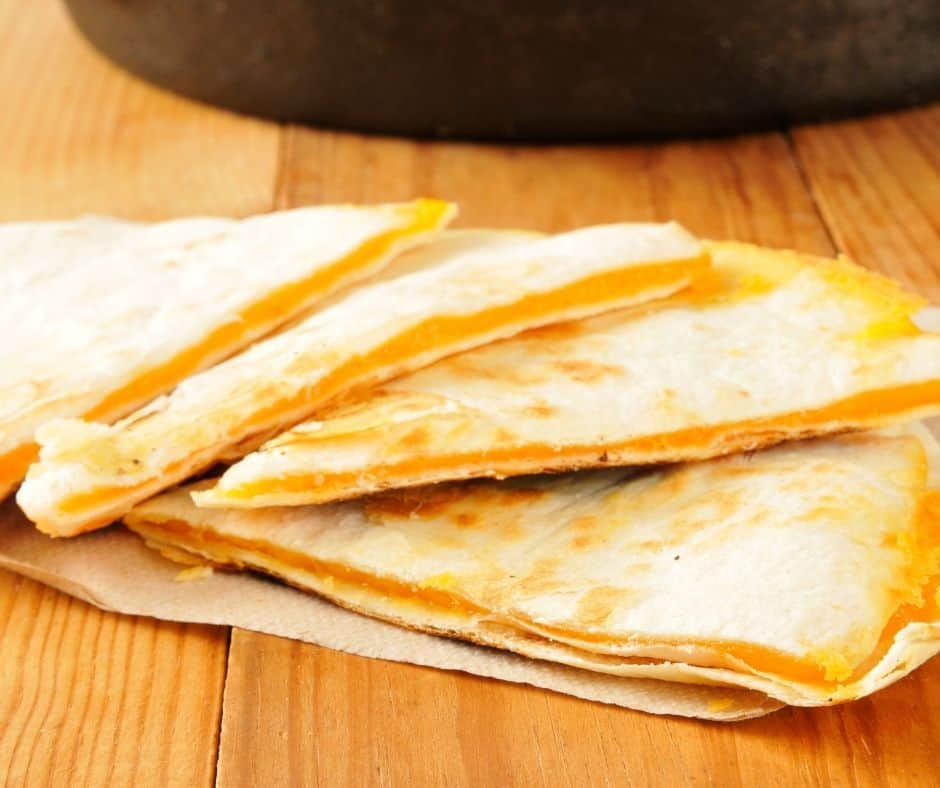

lazy quesadilla

disclaimer: mine are way better looking than the stock photo above mine are C R E A M Y
it's cheesey, it's squeezey, it's easy peasy
such a simple concept. such an elegant implementation. taste and behold the delish for yourself.
ingredients
- flour tortilla, 1 (folded)
- mexican cheese, hand full
- sour cream, healthy dollop
- cumin, a few shakes
- qdoba seasoning, a few shakes
- oregano, a bunch of shakes
- cayenne pepper, enough to make it a nice spicy color
- garlic powder, probably way too much
- lime juice, fresh squeezed when possible
- olive oil, tbsp
steps
- mix the sour cream with all the seasonings
- spread mixture across a large tortilla
- add a good amount of mexican cheese to one side and fold
- put in the air fryer on 370 degrees for maybe like 4 minutes ish
a warm meal after a long hike. takes 10 mins max and if you eat them regularly enough your shits just start to feel like the norm.